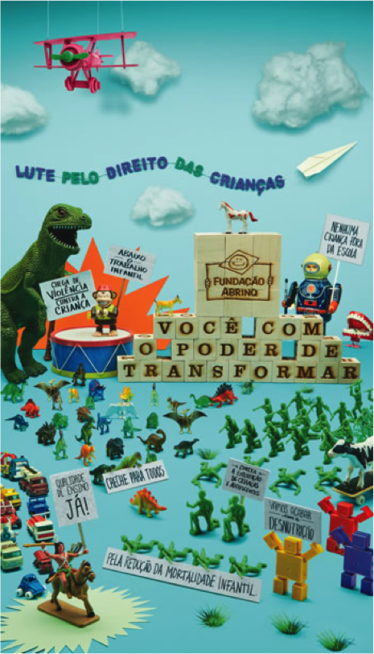

Fique antenado no que está rolando na comunicação de causas e OSCs
13 de Março de 2017 às 07:00
“O segredo da criatividade é saber como esconder as fontes.”
 É isso: não vou ficar aqui falando do que está rolando na comunicação para captação, veja você mesmo. Direto da fonte! E divirta-se :)
É isso: não vou ficar aqui falando do que está rolando na comunicação para captação, veja você mesmo. Direto da fonte! E divirta-se :)
Legenda imagem ao lado: Campanha “Estão Tirando o Verde da Nossa Terra”, lançada pela Fundação SOS Mata Atlântica em 1987 que se tornou uma das marcas do movimento ambientalista no Brasil.
Osocio - http://osocio.org - autointitulado “o melhor da publicidade e marketing sem fins lucrativos para causas sociais” – e acho que é mesmo - este blog reúne conteúdo de ações de ativismos e comunicação de diversos países. Tem vídeos, resenha de livros, estudo de caso..... muita coisa mesmo. Como este experimento feito em Israel para chamar atenção as riscos de dirigir e digitar no celular ao mesmo tempo, em que mostra o vídeo de uma vlogger famosa em um acidente de carro como se fosse ao vivo – muito bom! (http://osocio.org/message/famous-vlogger-crashes-live-on-youtube/ e em português http://www.comunicaquemuda.com.br/morte-ao-vivo/ ). Apesar de ter iniciado na Alemanha, é o mais internacional de todos, com referencias de diversos países. Adoro. Em inglês.
Comunica que Muda - http://www.comunicaquemuda.com.br - é um blog de comunicação de interesse público da agencia nova/sb Comunicação, que já tem 10 anos que esta no ar. Traz informações em português sobre campanhas e ações de comunicação de interesse público nacionais e internacionais. Dica: este site é conectado ao Osocio, e traduz as noticias de lá.
ESPM Social – Prêmio Renato Castelo Branco - http://prcb.espm.br criado em 2005 com o objetivo de “premiar agências e anunciantes por suas peças ou campanhas que demonstrem responsabilidade socioambiental e preocupação com uma comunicação consciente”. O site reúne os vencedores por ano, e tem tanto organizações, governos como empresas. E também tem um categoria para os universitários. Em português e brasileiro!
Caracol de Plata - http://www.caracoldeplata.org/memorias/index.php – falar desse prêmio irá denunciar minha idade (rs)... quando estava no IDIS, ajudávamos a promove-lo entre empresas e entidades brasileiras J É um prêmio Iberoamericano de reconhecimento a campanhas com mensagem social, tanto profissional quanto para universitários. O site é um pouco ruim para a busca dos premiados. Está organizado por ano e por categoria. Mas vale a paciência de ir lá garimpar, tem coisa muito boa. Revisitando agora, vi que esta ligado ao CEMEFI (associações de empresas, fundações e instituições do México), o que é muito bom, pois pode ganhar força.
Engage for Good (Antigo Cause Marketing Forum) – Halo Awards - http://engageforgood.com/halo-awards/ para os interessados em programas de marketing relacionado a causas, bem como programas sociais corporativos o Halo Awards é uma boa pedida. Está em sua 14a edição, o site traz as informações de mais de 200 programas americanos e canadenses que estão catalogados por ano, tipo e categoria. Dá para se divertir bem. Em inglês.
Legenda imagem ao lado: Campanha “Você com o poder de transformar” lançada pela Fundação Abrinq em 2015.
Ah! Esqueci de alguma fonte boa? Então me avise! marciakwoods@gmail.com
Frase atribuída a Albert Einstein mas sem evidências da autoria - hahahaha
Nada como um bom exemplo para despertar nossa criatividade, inspirar e nos dar “uma luz” para ajudar a executar um trabalho. E em comunicação isso não poderia ser mais verdade. Mas onde achar os bons exemplos, principalmente em comunicação de causas e OSCs? Depois de tanto me fazer a mesma pergunta e de ser questionada frequentemente, resolvi fazer esta relação de fontes, sites e blogs nacionais e internacionais sobre o tema.
É isso: não vou ficar aqui falando do que está rolando na comunicação para captação, veja você mesmo. Direto da fonte! E divirta-se :)Legenda imagem ao lado: Campanha “Estão Tirando o Verde da Nossa Terra”, lançada pela Fundação SOS Mata Atlântica em 1987 que se tornou uma das marcas do movimento ambientalista no Brasil.
Osocio - http://osocio.org - autointitulado “o melhor da publicidade e marketing sem fins lucrativos para causas sociais” – e acho que é mesmo - este blog reúne conteúdo de ações de ativismos e comunicação de diversos países. Tem vídeos, resenha de livros, estudo de caso..... muita coisa mesmo. Como este experimento feito em Israel para chamar atenção as riscos de dirigir e digitar no celular ao mesmo tempo, em que mostra o vídeo de uma vlogger famosa em um acidente de carro como se fosse ao vivo – muito bom! (http://osocio.org/message/famous-vlogger-crashes-live-on-youtube/ e em português http://www.comunicaquemuda.com.br/morte-ao-vivo/ ). Apesar de ter iniciado na Alemanha, é o mais internacional de todos, com referencias de diversos países. Adoro. Em inglês.
Comunica que Muda - http://www.comunicaquemuda.com.br - é um blog de comunicação de interesse público da agencia nova/sb Comunicação, que já tem 10 anos que esta no ar. Traz informações em português sobre campanhas e ações de comunicação de interesse público nacionais e internacionais. Dica: este site é conectado ao Osocio, e traduz as noticias de lá.
ESPM Social – Prêmio Renato Castelo Branco - http://prcb.espm.br criado em 2005 com o objetivo de “premiar agências e anunciantes por suas peças ou campanhas que demonstrem responsabilidade socioambiental e preocupação com uma comunicação consciente”. O site reúne os vencedores por ano, e tem tanto organizações, governos como empresas. E também tem um categoria para os universitários. Em português e brasileiro!

Caracol de Plata - http://www.caracoldeplata.org/memorias/index.php – falar desse prêmio irá denunciar minha idade (rs)... quando estava no IDIS, ajudávamos a promove-lo entre empresas e entidades brasileiras J É um prêmio Iberoamericano de reconhecimento a campanhas com mensagem social, tanto profissional quanto para universitários. O site é um pouco ruim para a busca dos premiados. Está organizado por ano e por categoria. Mas vale a paciência de ir lá garimpar, tem coisa muito boa. Revisitando agora, vi que esta ligado ao CEMEFI (associações de empresas, fundações e instituições do México), o que é muito bom, pois pode ganhar força.
Engage for Good (Antigo Cause Marketing Forum) – Halo Awards - http://engageforgood.com/halo-awards/ para os interessados em programas de marketing relacionado a causas, bem como programas sociais corporativos o Halo Awards é uma boa pedida. Está em sua 14a edição, o site traz as informações de mais de 200 programas americanos e canadenses que estão catalogados por ano, tipo e categoria. Dá para se divertir bem. Em inglês.
Legenda imagem ao lado: Campanha “Você com o poder de transformar” lançada pela Fundação Abrinq em 2015.
Ah! Esqueci de alguma fonte boa? Então me avise! marciakwoods@gmail.com
Sobre a autora: Marcia Kalvon Woods é comunicadora social formada pela ESPM, com mais de 15 anos de experiência no 3o setor, como gestora e especialista em investimento social. É vice-presidente da SAAP - Associação dos Amigos do Alto dos Pinheiros, membro dos Conselhos Curadores da Fundação Stickel e Amor Horizontal. É sócia da ABCR.
Publicado por
Notícias mais populares
Gestão
Em agosto de 2017, a revista ÉPOCA e o Instituto Doar divulgaram a primeira ediç&...
Contexto e tendências
Criado para tornar mais transparentes as parcerias entre a administração públic...
Profissional captador
A captação de recursos é fundamental para a sustentabilidade de uma organiza&cc...